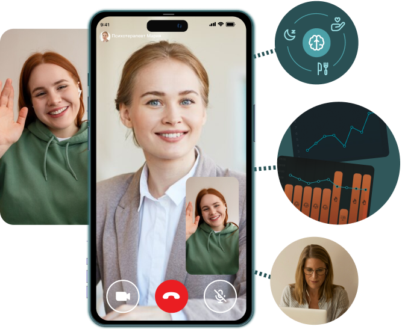
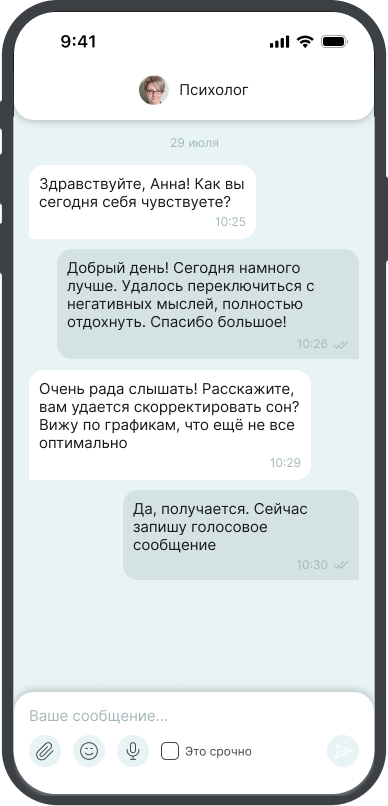
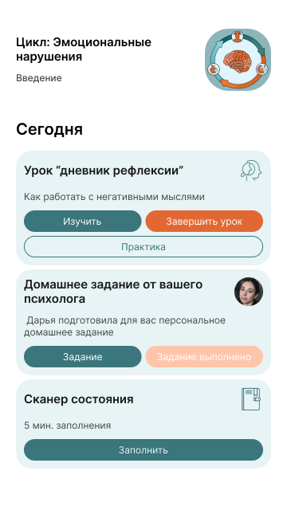
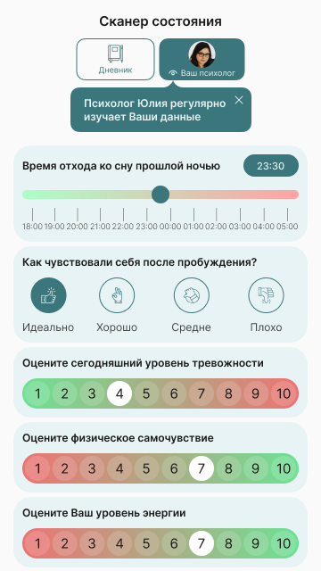
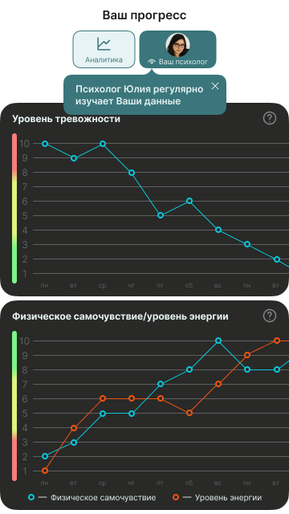

Получите самые эффективные подходы и форматы помощи в одном решении: консультации с психологом-экспертом по тревожным расстройствам, чат поддержки, интерактивные практики, анализ прогресса.
в неделю




Сформировали эффективные протоколы терапии разных видов тревоги, поэтому можем помочь даже в самых сложных случаях
Разработаем план терапии под вашу конкретную проблему с учетом особенностей вашей психики и состояния здоровья
Терапия в Uwio основана на когнитивно-поведенческой терапии (КПТ) — подход доказал свою результативность в исследованиях по всему миру и одобрен ВОЗ
В сложных случаях сочетаем психотерапию с коррекцией сна, питания для восстановления работы нервной, гормональной систем и нейромедиаторов.
По данным американской платформы ментального здоровья Meru Health, университетов Stanford и Harvard, такой подход повышает эффективность терапии на 67%.
В нашем телеграмм-приложении собран комплекс инструментов и практик для углубленной работы с тревожностью, стрессом и сопутствующими проблемами со здоровьем
Терапия в Uwio подойдет если:

Покажем вам результаты тестирования и отправим их вашему психотерапевту для формирования плана терапии.
Покажем вам результаты тестирования и отправим их вашему психотерапевту для формирования плана терапии.
Все наши специалисты специализируются на тревоге и тревожных расстройствах — начните терапию с любым из них.
Управлять расписанием сессий и подпиской вы сможете в нашем телеграм-приложении.
Что входит в подписку:
в неделю
Все наши специалисты работают с тревогой минимум 3-4 года и проходят регулярное обучение для повышения экспертизы в коррекции эмоциональных нарушений
Проверяем наличие профильного психологического или медицинского образования
Специалисты Uwio сохраняют полную конфиденциальность, не оценивают, не осуждают и ничего не навязывают
Будете чувствовать себя спокойно большую часть времени, станете гораздо легче реагировать на стресс
Повысите качество сна и уровень энергии, появится ясность мышления и повысится концентрация внимания, пройдут пугающие симптомы в теле
Научитесь самостоятельно выходить из тревожных состояний, справляться со страхами и навязчивыми мыслями, улучшите самоконтроль
Сможете продуктивнее работать, наслаждаться каждым днем и делать то, чего избегали раньше
Для повышения результативности соединяем разум и физиологию
Не затягиваем терапию на месяцы и годы — клинические улучшения наступают в течении нескольких недель
Детально продуманные и персонализированные программы повышают результативность терапии
Фиксируйте объективные изменения вашего эмоционального и физического состояния в аналитике приложения
Решите проблему комплексно в рамках краткосрочной программы
Начать терапию